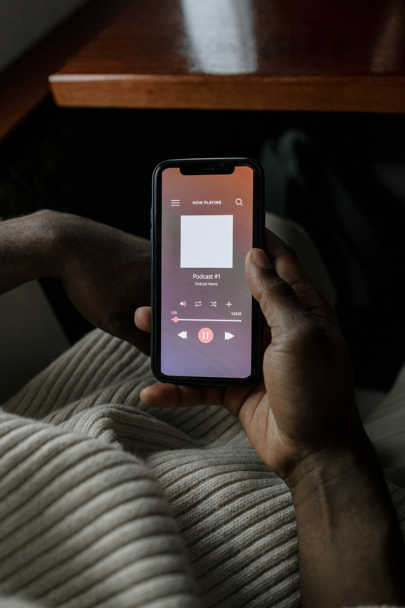

Ayuda y Recomendaciones
Información esencial y consejos prácticos para personas con
discapacidad auditiva sobre cómo manejar situaciones con niveles de
ruido elevados.
Protección Auditiva
- Utiliza protectores auditivos en ambientes ruidosos
- Mantén una distancia segura de las fuentes de ruido
- Evita la exposición prolongada a sonidos fuertes
Señales de Alerta
- Reconoce los síntomas de fatiga auditiva
- Identifica situaciones de riesgo
- Aprende a interpretar las señales visuales de advertencia
Recursos de Apoyo
- Contactos de emergencia especializados
- Aplicaciones y dispositivos de asistencia
- Grupos de apoyo locales
Medidas Preventivas
- Planifica rutas con menor exposición al ruido
- Utiliza aplicaciones de monitoreo de sonido
- Mantén revisiones auditivas regulares
En caso de emergencia
Si te encuentras en una situación de riesgo debido a niveles de
ruido excesivos:
- Abandona inmediatamente el área de alto ruido
- Busca un espacio silencioso o con niveles de ruido seguros
- Contacta con personal de emergencia si es necesario
- Utiliza la aplicación Quiet para medir los niveles de ruido
Educación y Herramientas
Explora herramientas y guías para gestionar el ruido y mejorar tu bienestar.

Medir el Ruido
Aprende a usar la app para medir el ruido en tu entorno y gestionarlo eficazmente.
Medición y el Entorno
Aprende cómo usar la app para medir y gestionar el ruido en diferentes lugares.
Acceder al Ruido
Descubre herramientas para encontrar los niveles de ruido en tu entorno y cómo mejorarlos.
Explorar más